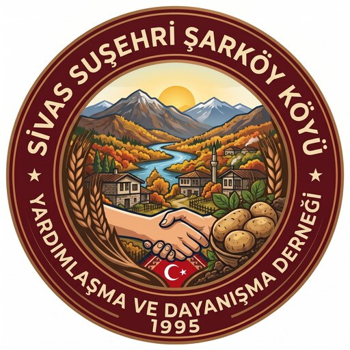
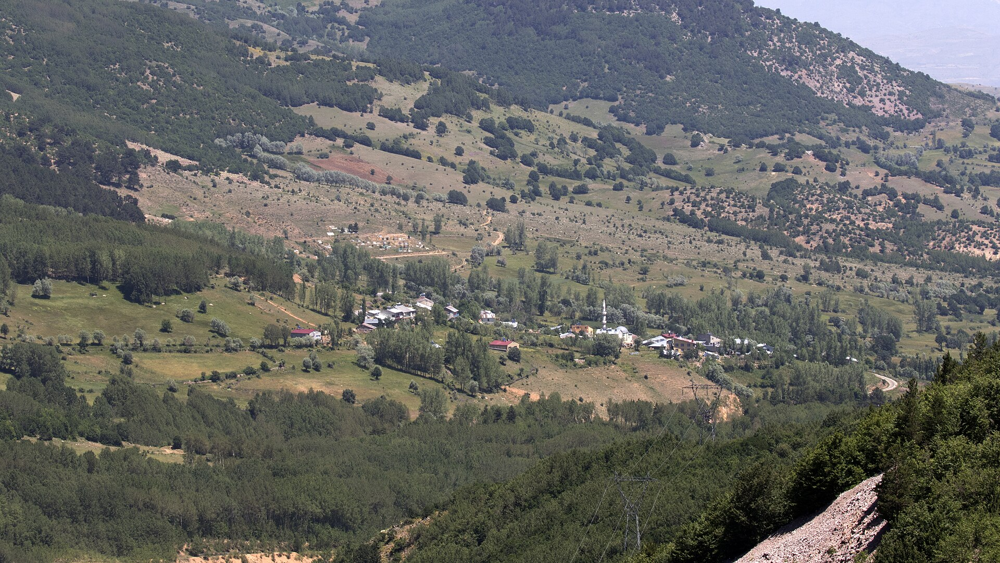

Süleymaniye Mah. 778. Sokak No: 28, Esenyurt / İstanbul
Bizi Takip Edin:
@sivassarkoy58

Sivas • Suşehri
Şarköy
Sosyal Yardımlaşma ve Kültür Derneği
Ana Sayfa
Dernek Hakkında
Dernek Başkanı
Galeri
Haberler & Duyurular
İletişim & Konum
Üye Ol
Ana Sayfa
Dernek Hakkında
Dernek Başkanı
Şarköy Galeri
Haberler & Duyurular
İletişim & Konum
